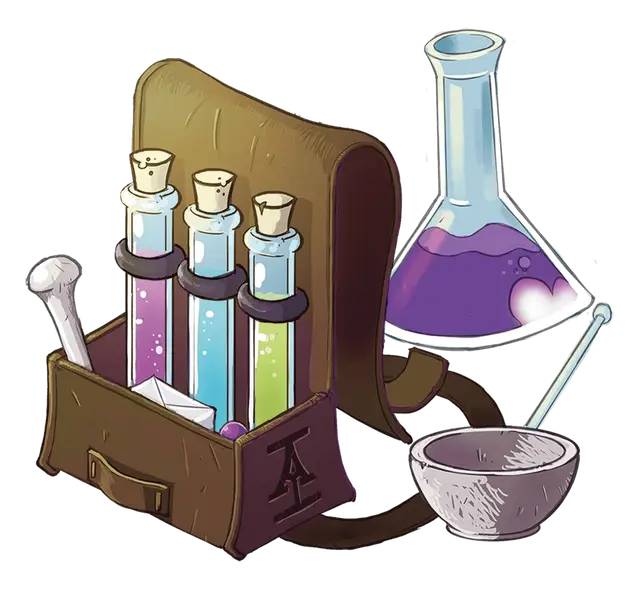

Дорожный алхимический набор
Travel Alchemical Kit
Чудесный предмет, необычный

Рекомендованная стоимость 101-500 зм
При получении 3-го ранга головной офис предоставляет вам дорожный алхимический набор - необычный магический предмет, содержащий миниатюрные версии как инструментов алхимика, так и инструментов отравителя (стеклянные флаконы, ступка и пестик, химикаты и стеклянную палочку для размешивания). В рамках этого повышения вы получаете владение инструментами отравителя.
Вы можете использовать этот магический набор до тех пор, пока он у вас находится, без необходимости раскладывать или убирать его. Если вас когда-либо обыскивают, то для того, чтобы найти ваш дорожный алхимический набор, требуется успешная проверка Интеллекта (Расследование) или Мудрости (Проницательность) Сл 20.